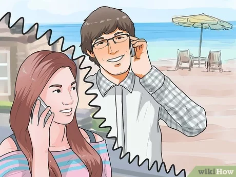

Tips percintaan untuk kalian yang sedang LDR
1. Buat kesepakatan
Sebelum memulai hubungan jarak jauh, ada baiknya jika kamu dan sang pasangan membuat semacam
kesepakatan agar kalian lebih memahami sesama. Tidak perlu terlalu serius, coba saja bahas hal-hal minor
seperti seberapa sering kalian harus berteleponan, atau seberapa detail kalian harus mengabari satu
sama lain. Mungkin kedengarannya formal sekali, tapi membuat kesepakatan akan membuat kalian lebih
mudah mengatur rencana.
2. Komunikasi, komunikasi, komunikasi!

Ketika ada jarak di antara kalian, komunikasi menjadi hal yang sangat penting. Kalau tidak bisa berkomunikasi
dengan baik, tentu akan sulit berhubungan, kan? Nah, coba untuk rajin memberi kabar pada sang pasangan
beritahu kegiatanmu, kamu sedang bersama siapa, dimana kamu berada, dan sebagainya dan pastikan si dia
juga melakukan hal yang sama.
Selain itu, suarakan perasaanmu saat kamu merasa sedih, kecewa, cemas,
atau marah. Sang pasangan tidak lagi ada di dekatmu, jadu dia tidak bisa menebak ekspresi dan isi hatimu
dengan mudah. Yuk, mulai biasakan untuk mengakui perasaan dengan jujur. Memang tidak mudah, tapi
memendam perasaan hanya akan membuat hubungan kalian tambah rumit
3. Menjadi lebih pengertian

Mungkin dia sedang sibuk sehingga kalian tidak bisa sering berteleponan, atau mungkin ia sedang lelah dan
tidak mood untuk berbicara dengan siapa-siapa rasanya ingin alone time saja! Jika pasanganmu berperilaku
seperti itu, pasti pada awalnya kamu kesal, kan? Kalian sudah sepakat untuk rajin berteleponan, menghubungi
satu sama lain, tapi ia justru ingkar janji. Namun jangan langsung membuat kesimpulan, jadilah lebih pengertian.
Jangan menjadi pasangan yang gila kontrol, kalau kamu mencoba memahami situasi sang pasangan, ia pun
akan melakukan hal yang sama kepadamu. Kunci utama sebuah hubungan adalah kepercayaan, ingat!
4. Jangan takut putus cinta
Bukan berarti semua hubungan jarak jauh akan berakhir dengan buruk, hanya saja seringkali orang-orang
berusaha terlalu keras untuk mempertahankan hubungan LDR karena rasanya sayang jika putus. Kalian sudah
berusaha keras untuk melanggengkan hubungan, tapi hubungan jarak jauh pun tidak bebas dari kemungkinan
buruk. Kalau merasa hubungan kalian sudah tidak sehat, dan kalian pun sudah tidak bahagia dengan sesama
lagi, tidak ada salahnya untuk berpisah.
Tentang Cinta
Cinta adalah ketulusan dari dua insan untuk saling mencintai dan menyayangi satu sama lain.Hubungan akan tetap berjalan lancar, bila keduanya saling jujur dan mau terbuka dengan permasalahan yang terjadi.
Berikan pasangan Kamu kejutan yang romantis, agar dia makin sayang dan cinta kepada Anda.
Tips Percintaan
Updates
Kata-Kata

Ragu jika dia sedang berbohong padamu? Tenang, ini beberapa
tanda yang dapat menunjukkan jika pasanganmu mungkin
saja sedang berbohong.
17
Apr
Tips percintaan untuk kalian yang sedang LDR
Simak yuk! Nih, beberapa tips buat kamu yang sedang menjalani hubungan LDR.
27
Mar
Quotes
Kelak akan kau temukan bahwa perpisahan hanyalah sebuah jalan untuk kembali dipertemukan.
05
Mar
Tanda-tanda yang bisa menunjukkan jika pacar kamu berbohong
Simak yuk! Nih, beberapa tanda-tanda yang bisa menunjukkan jika pasangan kamu berbohong.
Diam
Setiap mengingatmu:
silam terbagi goda
kita bertukar diam dalam pelukan.
Aku Ingin Tahu
Aku sangat suka membayangkan menjadi matamu.
Mengetahui apa saja yang ingin dan tak ingin kau lihat.
Belajar bagaimana caramu memandang sesuatu.
Mengetahui warna apa saja yang kau suka.
Sesekali merasakan bagaimana caramu bersedih.
Bagaimana caramu agar tetap terlihat kuat.
Aku ingin memahami rasanya menjadi matamu.
Lalu mengerti apa yang kau rasakan saat menatapku.